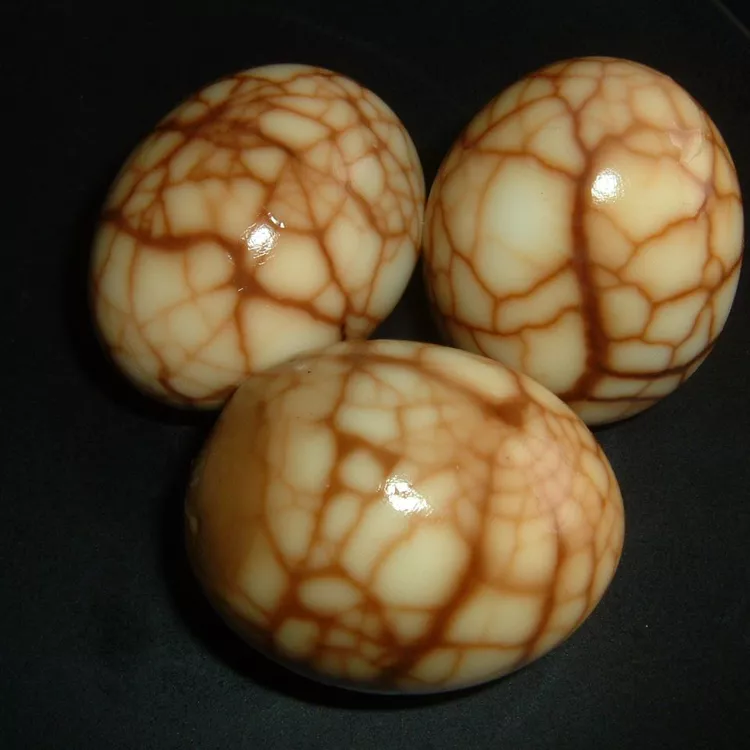

Chinese Tea Leaf Eggs

Description
Tea eggs are one of my favorite dishes and traditional lucky food to make for the Lunar New Year. These hard-boiled eggs are
subtly flavored with anise and have a deep brown hue from black tea and soy. The marbled patterns from the cracked shells make
these quite attractive. I eat them chilled and sliced in quarters as a side dish, appetizer, or snack.
ingredients
- 3 cups water
- 2 tablespoon black tea leaves
- 1 tablespoon soysauce
- 1 tablespoon black soysauce
- 1 tablespoon tangerine zest
- 1 (2 inch) pieace of cinnamon stick
- 2 pods star anise
- 1 1/4 tablespoons salt, divided
- 8 large eggs
Steps
- Combine 3 cups water, tea leaves, soy sauce, black soy sauce, zest, cinnamon stick, star anise, and 1/4 teaspoon salt in a large saucepan;
bring to a boil. Reduce heat, cover, and simmer for 3 hours.
- Meanwhile, place eggs and remaining 1 teaspoon salt into a medium pot; cover with cold water. Bring to a boil, reduce heat, and simmer
for 20 minutes. Remove from heat, drain, and cool. Tap cooled eggs with the back of a spoon to crack shells; do not remove shells.
- Remove the saucepan from heat. Add eggs and let steep for at least 8 hours.